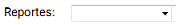

|
Reportes de Ventas
|
Anterior Inicio Siguiente |
1. Dentro de la solapa ,
vamos a poder seleccionar el reporte deseado.
2. Una vez elegido el reporte dentro del cuadro , deberemos
ingresar los parámetros de búsqueda según corresponda al reporte (formato de fecha
“DD/MM/AAAA”).
3. Ya seteados los parámetros del reporte, presionamos el botón.